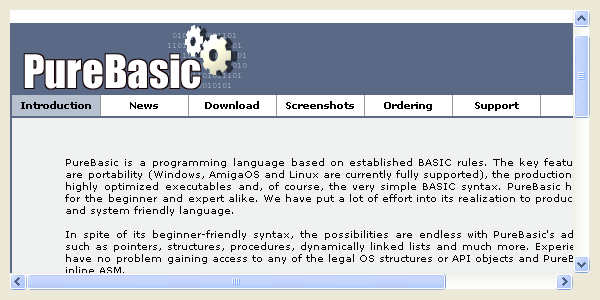

WebGadget()
Syntax
Result = WebGadget(#Gadget, x, y, Width, Height, URL$)Description
Creates a Web gadget in the current GadgetList. It can display html pages.
Parameters
#Gadget A number to identify the new gadget. #PB_Any can be used to auto-generate this number. x, y, Width, Height The position and dimensions of the new gadget. URL$ The url to load after the gadget is created.
Return value
Returns nonzero on success and zero on failure. If #PB_Any was used as the #Gadget parameter then the return-value is the auto-generated gadget number on success.
This function fails if the required components for the WebGadget cannot be loaded. See below for the requirements for the WebGadget on each OS.
Remarks
The following components are required to use the WebGadget on each OS. These components are required to use the WebGadget, not only for the compilation of the program.
WindowsThe WebGadget uses the Internet Explorer 4.0+ ActiveX object on Windows.LinuxThe WebGadget uses the WebKitGtk library on Linux. The package with this library is named 'libwebkit'. Some distributions may include an old version of this package which is named 'WebKitGtk'. If your distribution does not include a package for this library, the sources can be downloaded from the WebKitGtk home page.Mac OSXThe WebGadget uses the WebKit component on Mac OSX. This component comes with the operating system. There are no further requirements.The following functions can be used to act on a WebGadget:
- SetGadgetText(): Change the current URL.
- GetGadgetText(): Get the current URL.
- SetGadgetState(): Perform an action on the gadget. The following constants are valid:#PB_Web_Back : One step back in the navigation history. #PB_Web_Forward: One step forward in the navigation history. #PB_Web_Stop : Stop loading the current page. #PB_Web_Refresh: Refresh the current page.
- SetGadgetItemText(): With #PB_Web_HtmlCode as 'Item' html code can be streamed into the Gadget. (Windows only)
- GetGadgetItemText(): The following constants can be used to get information (Windows only):#PB_Web_HtmlCode : Get the html code from the gadget. #PB_Web_PageTitle : Get the current title for the displayed page. #PB_Web_StatusMessage: Get the current statusbar message. #PB_Web_SelectedText : Get the currently selected text inside the gadget.- SetGadgetAttribute(): Set the following attributes (Windows only):#PB_Web_ScrollX : Set the horizontal scrolling position. #PB_Web_ScrollY : Set the vertical scrolling position. #PB_Web_BlockPopups : Block popup windows. #PB_EventType_PopupWindow is fired if this setting is enabled. #PB_Web_BlockPopupMenu: Block standard the popup menu. #PB_EventType_PopupMenu is fired if this setting is enabled. #PB_Web_NavigationCallback: Set a callback for monitoring (and disabling) navigation.The Navigation callback must have the following format:Procedure NavigationCallback(Gadget, Url$) ; ; Return #True to allow this navigation or #False to deny it. ; ProcedureReturn #True EndProcedure- GetGadgetAttribute(): Get the following attributes (Windows only):#PB_Web_ScrollX : Get the horizontal scrolling position. #PB_Web_ScrollY´ : Get the vertical scrolling position. #PB_Web_Busy : Returns nonzero if the gadget is busy loading a page. #PB_Web_Progress : Returns the current (sometimes estimated) progress after a #PB_EventType_DownloadProgress event. #PB_Web_ProgressMax : Returns the current (sometimes estimated) maximum progress after a #PB_EventType_DownloadProgress event. #PB_Web_BlockPopups : Get the current popupwindow blocking setting. #PB_Web_BlockPopupMenu: Get the current popupmenu blocking setting. #PB_Web_NavigationCallback: Get the current navigation callback (if any).The following types of events can happen for this gadget:#PB_EventType_TitleChange : The page title changed (Windows only). #PB_EventType_StatusChange : The status message changed (Windows only). #PB_EventType_DownloadStart : A page download started (Windows, OS X). #PB_EventType_DownloadProgress: Progress info is available with GetGadgetAttribute() (Windows only). #PB_EventType_DownloadEnd : A page download ended or aborted (Windows, OS X). #PB_EventType_PopupWindow : A popup window was blocked (Windows only). #PB_EventType_PopupMenu : The popup menu was blocked (display a custom menu here) (Windows only).
Example
If OpenWindow(0, 0, 0, 600, 300, "WebGadget", #PB_Window_SystemMenu | #PB_Window_ScreenCentered) WebGadget(0, 10, 10, 580, 280, "http://www.purebasic.com") ; Note: if you want to use a local file, change last parameter to "file://" + path + filename Repeat Until WaitWindowEvent() = #PB_Event_CloseWindow EndIf

Example 2: (with navigation callback); This example does display the PureBasic.com website. Inside the callback procedure ; the navigation to the 'News' site will be avoided (#False returned), but allowed ; for all other sites (#True returned). Procedure NavigationCallback(Gadget, Url$) If Url$= "http://www.purebasic.com/news.php" MessageRequester("", "No news today!") ProcedureReturn #False Else ProcedureReturn #True EndIf EndProcedure If OpenWindow(0, 0, 0, 600, 300, "WebGadget", #PB_Window_SystemMenu | #PB_Window_ScreenCentered) WebGadget(0, 10, 10, 580, 280, "http://www.purebasic.com") SetGadgetAttribute(0, #PB_Web_NavigationCallback, @NavigationCallback()) Repeat Until WaitWindowEvent() = #PB_Event_CloseWindow EndIf
See Also
GetGadgetText(), SetGadgetText(), GetGadgetItemText(), SetGadgetItemText(), SetGadgetState(), GetGadgetAttribute(), SetGadgetAttribute()
Supported OS
All